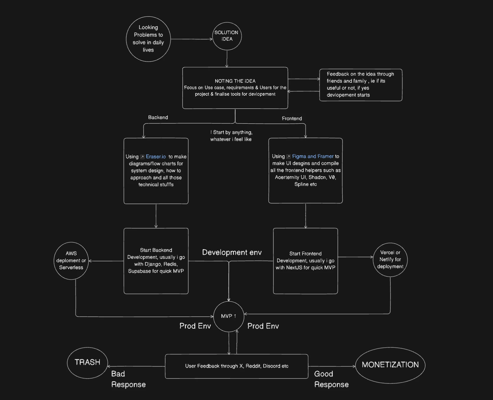
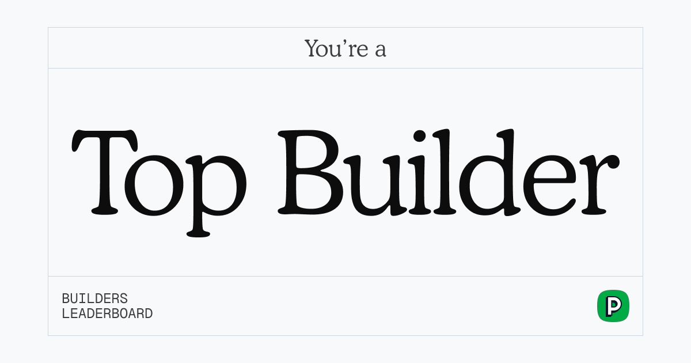
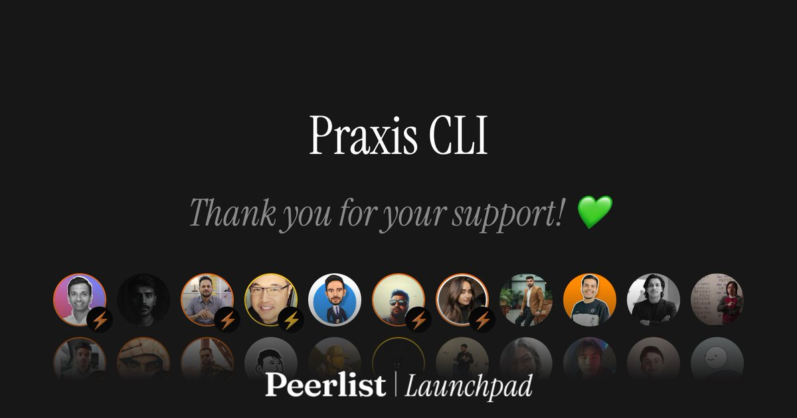

I’m a backend engineer who treats infrastructure as craft, not vibes. I build SaaS tooling that improves developer experience and productivity tools that help teams move faster without sacrificing reliability. My focus is on APIs with clear ownership, infra you can trust, and debugging that’s actually transparent. I believe in shipping fast, learning from feedback, and iterating—on backends built to last.
"Good software is cultivated, not assembled — each layer of abstraction should feel as natural as the one beneath it."
—My Engineering PhilosophyAs a developer, I use many too many tools and technologies to bring ideas to life, but these are my favorite ones which i have good experience with.
Developed HIPAA-compliant ETL pipelines using PySpark, processed 10M+ patient records daily, delivered 40+ healthcare performance metrics, built a PyTest-based framework, and implemented a Data Quality Management framework, improving coverage and QA time.
Built 10+ Power BI dashboards with advanced DAX, boosting KPI visibility by 25% across 1,200+ distribution points. Automated 15+ warehouse simulation reports using SQL and Python, reducing manual effort by 40% and speeding reporting by 30%. Analyzed 2TB+ MongoDB data via Grafana to uncover operational bottlenecks. Led PAN-India supply chain analytics for Oreo, improving demand forecasting by 20% across 29 states. .
I take a user-centric approach to engineering, focusing on deeply understanding problems and rapidly prototyping solutions based on feedback. I emphasize clean, scalable code and intuitive design to build products that are both effective and easy to evolve.

Trusted by Grammy-winning producers, touring DJs, and audio engineers at the world's top studios.


Here’s a crisp list of key software development methodologies and principles i follow being the industry standard ones which are widely used and accepted by the software development community.
Every EchoPulse is finished by hand in a temperature-controlled chamber. The anodized aluminum shell resists fingerprints and micro-scratches while developing a unique patina over time.
My top three favorite meetups—I'm always excited to attend and meet new, like-minded people.